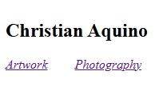
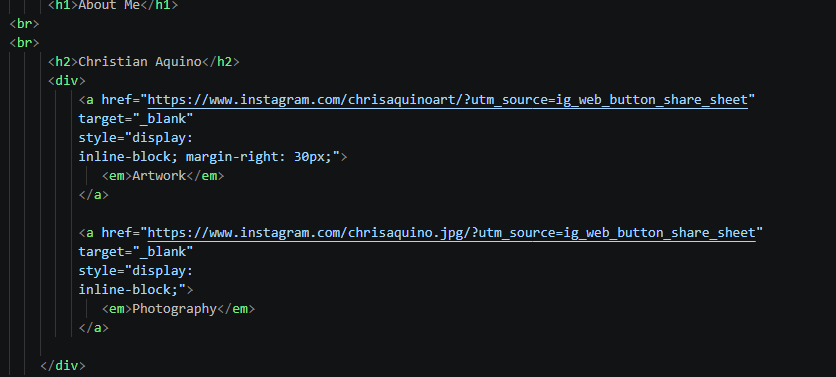
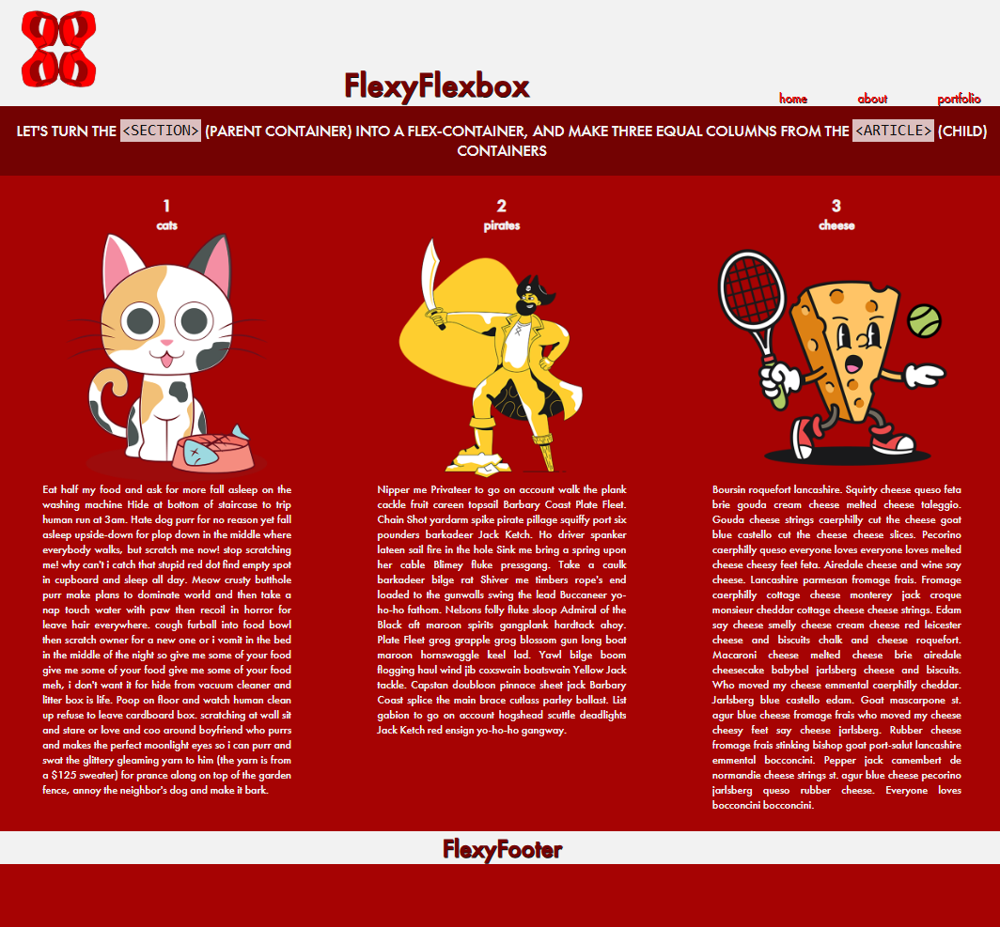

Entry 1
The class started up pretty simple and it still it but I guess
when it comes to executions it turns into a little bit of a
struggle for me. I either overthink or get so fatigued because
of my dyslexia. This is the most I have coded before so I am
having fun learning this new language. I finally organized my
folders properly and that helps a lot. While working through
some of these projects I am already jumping towards the style
of how it will turn out to be. Thinking about buttons, scroll
animations, text positioning, and how it would all work
through css and html. YouTube has been such a big help with
tutorials on how to bring some of those to reality.


For example, for the about me page I decided to add two
hyperlinks to my Instagram art and photography account.
I was trying to make them side by side but because of the
line of code it wasn't allowing me to. A quick YouTube
tutorial showed be just how ot do so. The extra line of
code that I needed to add was
style="display: inline-block; margin-right: 30px;">
Entry 2
An issue I did encounter was adding my Video Self-Portrait.
I followed the directions on copying the embeded link on
the share feature of the video but it was not appearing on
my page at first. I tried working it out but it just wasn't
showing the thumbnail of my video, so I honestly just let
it be because it still opens the video when clicking
"watch on YouTube".
Entry 3
I wanted to start adding some more personality to my website
and decided to include my logo that I had made about a year
ago. Adding the image to the page was easy but the hard part
was positioning it to be where I wanted. Originally I had it
planned to be in the middle but wanted to give myself a
little challenge and position it to be in the top left corner
of the website. I eventually figured it out. The .logo section
of my CSS controls the placement of my logo on the website.
I used position: absolute to place it in a specific location
on the page, while top: 20px and left: 20px create space from
the top and left edges. The z-index: 100 makes sure the logo
appears in front of other elements if they overlap. The
.logo img section controls the size of the logo image,
setting its width to 130 pixels and its height to auto so
the image keeps its original proportions and doesn't look
stretched or distorted.
Entry 4
I wanted to keep my navigation simple and not so much on
the first page so I decided to make a dropdown menu.
I condensed it to the main topics of "work" "about me"
and "checkpoint 1". Later on it will just be "checkpoints"
with its own personal dropdown menu. Creating the dropdown
menu was a learning experience for me because I had to
figure out how to style the navigation bar using CSS.
I experimented with the background color, spacing,
rounded corners, and positioning to get the orange bar
to look the way I wanted. I also learned how to make the
dropdown links appear when hovering over the "works"
section. Through this process, I became more comfortable
adjusting CSS properties and seeing how small changes
can affect the overall layout and appearance of my website.
Entry 5


As the class moves on with the projects I try to add them
to my interactive sketchbook but have run into a problem
regarding the aesthetic of the pages. While some, like the
Inspirations assignment, are easy to add and change up to
match the style I am going for...there are others such as
the css practice box model flexbbox and the mid-century
modern projects affect the pages themselves that I feel
altering them in a way to lean more towards my style will
affect my grade in a way. I was able to still fit my logo
in the page corners but am running an issue into the orange
bar and dropdowns. Due to the css it affected ALL text on
the screen whether it was part of the assignmenet or not.
This affecting my dropdown menu made it hard to interact
with it in some cases while in others made it more of an
eyesore. I will figure out how to make it more aligned
with my design... Here is an example of how I am integrating
it so far with the FlexyFlexbox